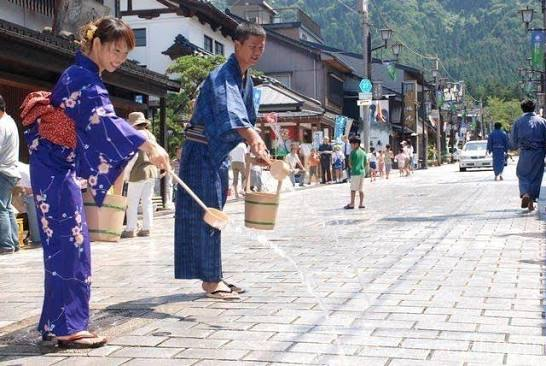

เกียวโต (Kyoto)

เกาะทางตอนเหนือสุดที่อากาศเย็นสบายตลอดปี เป็นสวรรค์ของคนชอบความหนาว หิมะนุ่มละเอียดเหมือนแป้ง และธรรมชาติกว้างใหญ่ พิกัดยอดฮิตคือเมืองซัปโปโรที่มีสวนโอโดริสำหรับจัดเทศกาลหิมะช่วงกุมภาพันธ์ เมืองโรแมนติกโอตารุที่มีคลองโบราณและพิพิธภัณฑ์กล่องดนตรี และหุบเขานรกจิโกะคุดานิที่โนโบริเบทสึซึ่งเป็นเมืองออนเซ็นชื่อดัง อาหารขึ้นชื่อคือข้าวหน้าปลาดิบ ปูยักษ์ 3 ชนิด เจงกิสข่าน (ปิ้งย่างเนื้อแกะ) และซอฟต์เสิร์ฟนมสด การเดินทางสามารถบินตรงจากกรุงเทพฯ ลงสนามบินนิวชิโตเสะ หรือบินภายในประเทศจากโตเกียวมาลงที่นี่ใช้เวลาประมาณ 1 ชั่วโมงครึ่ง